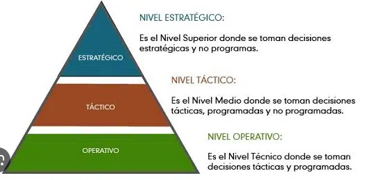

Debe cumplir con los siguientes componentes básicos interactuando entre sí: El hardware, equipo físico utilizado para procesar y almacenar datos. El software y los procedimientos utilizados para transformar y extraer información. Los datos que representan las actividades de la empresa.
Dentro de una empresa los sistemas de información actúan como el sistema nervioso ya que se encarga de hacer llegar información oportuna y precisa con la presentación y el formato adecuado, a la persona que la necesita dentro de la organización para tomar una decisión o realizar alguna operación y justo en el momento de que esta persona necesita disponer de dicha información.
Los elementos estructurales son permanentes y básicos, no son sujetos a consideraciones circunstanciales ni coyunturales, sino que son la esencia y la razón de ser del mismo sistema.
Las funciones de un sistema de información dentro de una empresa, funciona con la tecnología informática, ya que ésta ha llegado para facilitar la administración de datos en las empresas. Pero esta no es la única cualidad con la que cuenta un sistema de información. Por ello, profundicemos en sus funciones más importantes:
